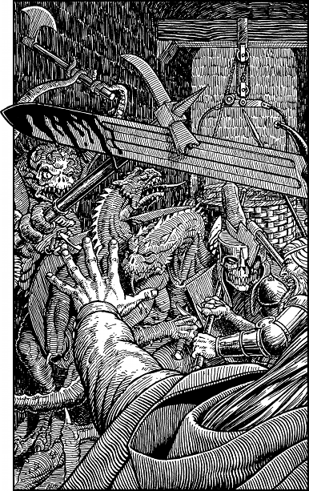

109
You learn that the princes and their bodyguard of War-thanes have held the throne chamber for six days. They have no food or water, and it is only the radiant power of the throne that has sustained them. Prince Leomin knows the precise location of Shom’zaa’s lair and he will lead you to it. You agree to go with him while Prince Torfan remains here to command the defence of the throne chamber.
Leomin takes you to a stone door set flush into the curving marble wall. A grizzled old warrior sits guard at this portal, and clutched in his vein-covered hands is a glowing runestone. Your Kai senses detect that this door is sealed by an Old Kingdom Spell that has prevented Shom’zaa’s horde from gaining entry to the chamber by this way. Prince Leomin unsheathes his battle-axe and motions you to draw your Weapon before the door is opened.
‘Shom’zaa abandoned his attempt to batter down this portal two days past,’ he says. ‘But there may be some of his spawn-kind waiting in the corridor outside. Best be on our guard, Kai Lord.’
Leomin nods to the old warrior and he responds by touching the runestone to the door. There is a faint tinkling sound, and then the portal slides open and you follow the prince as he steps through the opening into the darkened passageway beyond. The portal slides shut behind your back with hardly a sound. Instinctively you scan your new surroundings for signs of the enemy, and quickly discover that Leomin was right to be cautious. More than a dozen Shom’zaa Agarashi have been left here to guard the portal. Only by chance have you chosen a time to leave the chamber when these creatures are asleep.
Leomin points to the end of the wide corridor, to a place where a circular shaft descends to a lower level. A large basket, suspended by a rope and pulley, hangs above this shaft. The prince beckons you to follow as he tiptoes around the sleeping creatures and approaches the basket. You are halfway along the corridor when suddenly one of the Shom’zaa Agarashi awakens and shrieks in alarm. You respond by racing towards the distant shaft, but within a matter of seconds, all of the sleeping creatures are on their feet and rushing from all sides to block your escape. You must fight them.

Shom’zaa Agarashi: COMBAT SKILL 42 ENDURANCE 44
You may add 5 to your COMBAT SKILL for the duration of this combat, for Prince Leomin is fighting by your side.
If you win the combat, turn to 258.